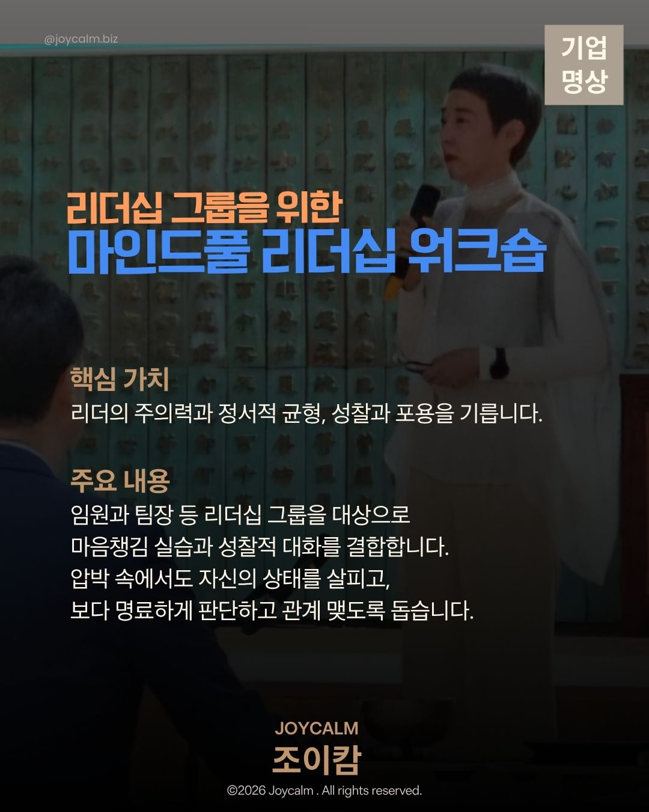
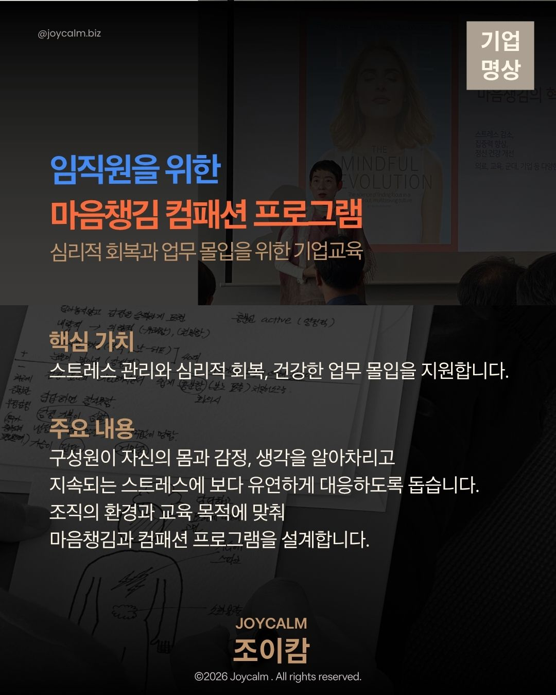
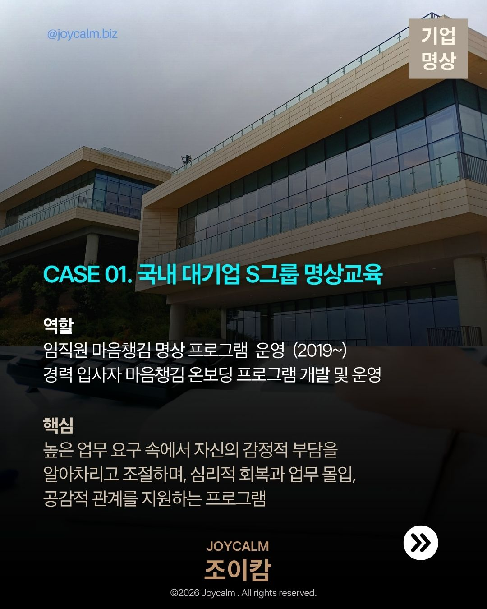
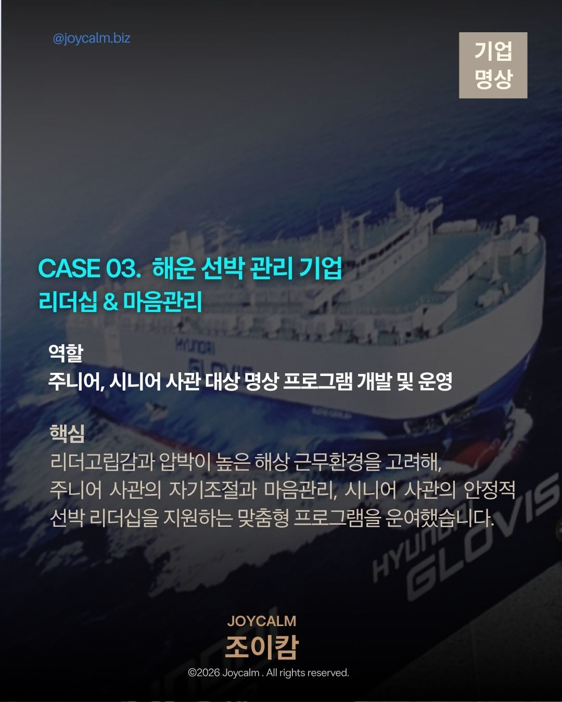
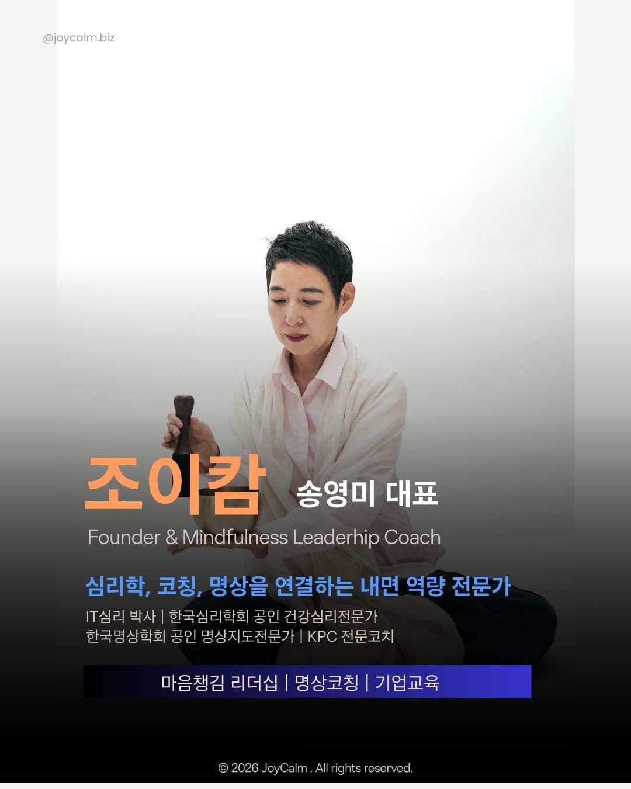

마인드풀 리더십 워크숍
리더십 그룹을 위한
리더의 주의력과 정서적 균형, 성찰과 포용을 기릅니다. 임원과 팀장 등 리더십 그룹을 대상으로 마음챙김 실습과 성찰적 대화를 결합해, 압박 속에서도 자신의 상태를 살피고 보다 명료하게 판단하고 관계 맺도록 돕습니다.
Calm으로 내면의 중심을 세우고, Joy로 가능성을 펼칩니다
조이캄은 마음챙김과 컴패션을 통해 내면의 중심을 세우고,
자신의 가치와 가능성을 삶과 일 속에 펼치도록 돕습니다.
명상은 멈추는 데서 끝나지 않습니다.
더 명료하게 선택하고 온전히 행동하기 위한 훈련입니다.
CORPORATE MINDFULNESS SOLUTIONS
조이캄은 정해진 프로그램을 반복하기보다 조직의 목적, 참여자의 특성, 업무환경과 전달방식에 맞춰 마음챙김 프로그램을 기획 개발하고 운영합니다.

리더십 그룹을 위한
리더의 주의력과 정서적 균형, 성찰과 포용을 기릅니다. 임원과 팀장 등 리더십 그룹을 대상으로 마음챙김 실습과 성찰적 대화를 결합해, 압박 속에서도 자신의 상태를 살피고 보다 명료하게 판단하고 관계 맺도록 돕습니다.

임직원을 위한
스트레스 관리와 심리적 회복, 건강한 업무 몰입을 지원합니다. 구성원이 자신의 몸과 감정, 생각을 알아차리고 지속되는 스트레스에 보다 유연하게 대응하도록 조직의 환경과 교육 목적에 맞춰 설계합니다.
임원과 리더를 위한
감정적 부담을 조절하고 판단의 명료성을 높입니다. 높은 책임과 복잡한 관계 속에서 자신의 내적 상태를 알아차리고, 더 침착하고 명료하게 선택하도록 돕습니다. 1:1 비밀보장 코칭과 리더십 그룹 명상코칭으로 운영할 수 있습니다.
대면 교육 | 리더십 명상 과정 | 디지털 콘텐츠 | 특수 직무 프로그램
MINDFUL LEADERSHIP CORE CAPACITIES
마음챙김과 컴패션을 삶과 일의 역량으로 전환합니다.
ATTENTION
주의가 흩어졌음을 알아차리고, 지금 중요한 대상으로 다시 돌아오는 능력입니다.
정보 과부하와 잦은 전환 속에서도 우선순위를 분명히 하고 핵심 과제에 집중하도록 돕습니다.
주의력 → 업무 몰입력
EMOTION REGULATION
감정을 억누르거나 없애는 것이 아니라, 자신의 감정을 알아차리고 조절하는 능력입니다.
압박과 갈등 속에서도 자동적으로 반응하기보다 대화와 판단을 위한 내적 여유를 확보하도록 돕습니다.
정서력 → 회복탄력성
REFLECTION
자신의 감정과 경험, 가정과 편향이 판단에 어떤 영향을 주는지 살피는 능력입니다.
복잡한 이해관계 속에서 사실과 해석을 구분하고, 핵심을 명료하게 바라보며 책임 있는 선택을 하도록 돕습니다.
성찰력 → 명료한 의사결정
COMPASSION
자신과 타인이 겪는 어려움을 알아차리고, 그 순간 필요한 방식으로 응답하는 능력입니다.
심리적 안전감과 신뢰를 높이고, 갈등 속에서도 관계를 해치지 않으며 협력적인 대화를 이어가도록 돕습니다.
포용력 → 컴패션 리더십
1:1 EXECUTIVE & LEADERSHIP GROUP COACHING
질문과 대화를 통해 목표와 관점을 탐색하고 새로운 선택과 행동을 발견합니다.
코칭의 질문과 대화에 호흡, 몸, 감정, 생각을 알아차리는 명상 실습을 결합합니다.
자동적인 반응에서 한걸음 물러나 자신의 내적 상태를 살피고, 지금 필요한 선택을 더 명료하게 바라보도록 돕습니다.
의사결정권자를 위한
리더십 그룹을 위한
SELECTED CORPORATE MINDFULNESS PROJECTS

2019~ | 임직원 마음챙김 명상 프로그램 운영, 경력 입사자 마음챙김 온보딩 프로그램 개발 및 운영
높은 업무 요구 속에서 자신의 감정적 부담을 알아차리고 조절하며, 심리적 회복과 업무 몰입, 공감적 관계를 지원하는 프로그램
2022~ | 임직원 리더십 마음챙김 프로그램 기획·개발 및 운영, 사내 디지털 명상 가이드 콘텐츠 개발 및 녹음
리더의 주의력과 정서적 균형, 성찰력을 기르고 압박 속에서도 명료하게 판단하고 관계 맺도록 돕는 마음챙김 리더십 프로그램과 일상 실천을 지원하는 디지털 명상 콘텐츠 개발

주니어·시니어 사관 대상 명상 프로그램 개발 및 운영
고립감과 압박이 높은 해상 근무환경을 고려해, 주니어 사관의 자기조절과 마음관리, 시니어 사관의 안정적 선박 리더십을 지원하는 맞춤형 프로그램
SELECTED MINDFUL LEADERSHIP PROJECTS
5년차 장기 과정과 그룹사 적용 기록
임원, 팀장 및 리더십 그룹 | 2022년부터 온·오프 정기 과정 기획 및 운영
일회성 체험을 넘어, 리더가 일상에서 주의력과 정서적 균형, 성찰과 포용을 지속적으로 훈련하도록 돕는 마음챙김 리더십 과정
팀장 이상 리더 | 1DAY 마음챙김 리더십 워크숍
성과와 의사결정 압박 속에서도 자신의 상태를 알아차리고, 감정에 매몰되지 않으며, 정서적 균형과 판단의 명료성을 회복하도록 돕는 체험형 과정
팀장 이상 리더십 그룹 | 마음챙김 리더십 과정 15회 실행
빠른 변화와 높은 업무 요구 속에서 리더가 자신의 에너지를 살피고, 자기조절력과 정서적 균형, 팀을 이끄는 내적 이유를 기르도록 돕는 실천형 과정

FOUNDER & MINDFULNESS LEADERSHIP COACH
심리학, 코칭, 명상을 연결하는 내면 역량 전문가
심리학, 코칭, 명상 훈련을 통합해 리더의 내적 변화가 실제 선택과 행동으로 이어지도록 돕습니다.
마음챙김 리더십 | 명상코칭 | 기업교육
CONTACT
조이캄은 조직의 목적과 참여자의 특성에 맞춰
기업 마음챙김 프로그램을 기획하고 운영합니다.